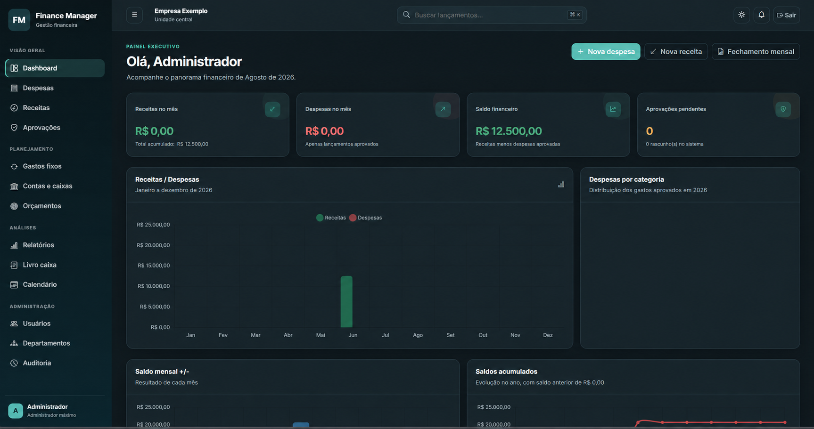

Edição de portfólio
Finance Manager
Uma base de gestão para organizar receitas, despesas, contas e permissões de acesso.
Conhecer o exemplo de Finance Manager01Dinheiro organizado
Entenda o que entra, o que sai e o que sobra.
Reúna receitas, despesas, contas e relatórios para acompanhar o dinheiro do seu negócio.
Sistema configurado conforme o escopo. Escopo e investimento definidos na proposta.

Quando faz sentido
Para quem precisa centralizar os lançamentos e acompanhar o caixa com mais clareza.
Faz sentido quando os lançamentos precisam ficar organizados em um lugar e o controle envolve diferentes pessoas ou rotinas.
Precisa de um controle individual mais direto? Conheça também as planilhas de controle.
O que podemos organizar com você
Receitas, despesas e contas reunidas para acompanhar os movimentos do negócio.
Uma visão por período para entender o que entrou, o que saiu e o saldo disponível.
Relatórios e permissões definidos conforme quem usa e o que precisa consultar.
Do produto à prática
Conheça as interfaces e o estágio de cada projeto. As prévias ilustrativas estão identificadas.
Edição de portfólio
Uma base de gestão para organizar receitas, despesas, contas e permissões de acesso.
Conhecer o exemplo de Finance ManagerAntes de começar
A proposta parte da sua rotina e registra estas decisões:
O que considerar
Integrações com bancos, pagamentos e emissão fiscal precisam estar descritas na proposta. A interface de exemplo não significa que esses serviços já estão incluídos.
Entender a contrataçãoUma conversa, uma proposta clara
Conte o que você precisa organizar. A proposta apresenta o que será entregue, o prazo, o investimento e as condições de suporte.
Você avalia a proposta antes de contratar.